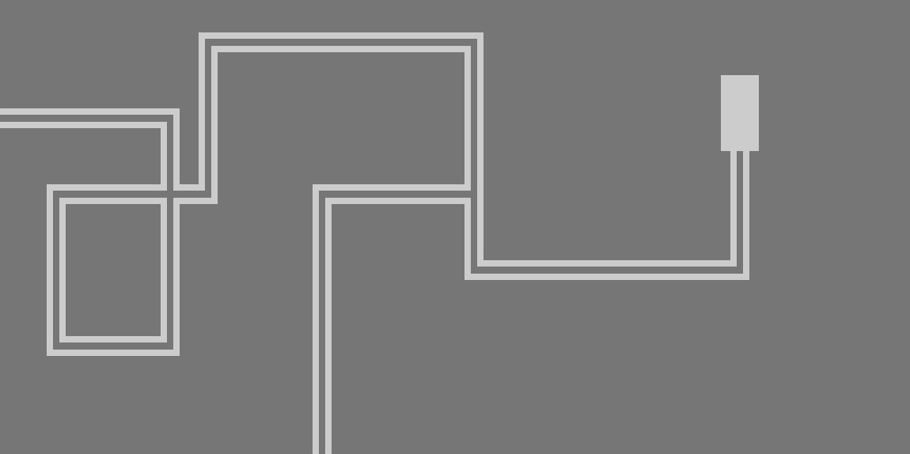
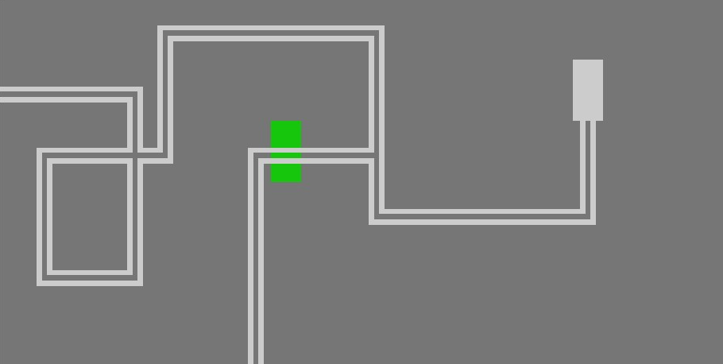
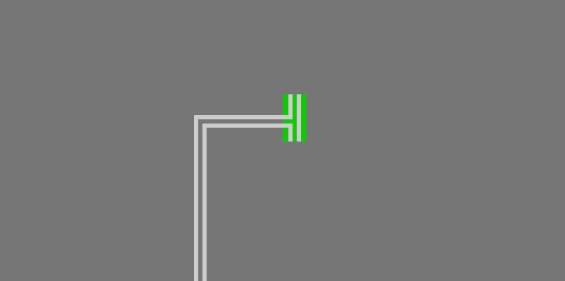

A játék legenerál egy pályát melyben a játékosnak meg kell találni az elrejtett szobákat, majd az egyik kijáraton, ha az összeset megtalálta kilépni a pályáról.
A játékos a WASD gombok segítségével mozoghat a pályán és csak abba az irányba haladhat amerre a pálya útvonala mutatja, a kilépéshez el kell jutnia valamelyik kijárathoz.
Az alapjátéknak egyfajta nehezítése, mivel indulásnál nem látja a játékos a térképet. A labirintusnak csak az a része látható, amit már bejárt korábban.
